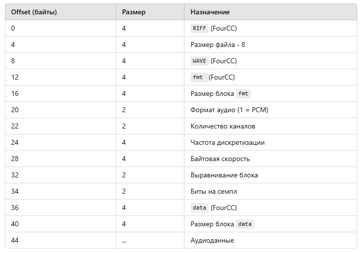
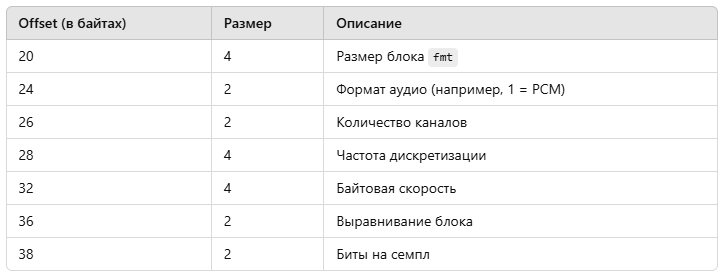
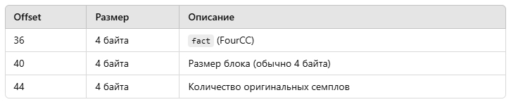
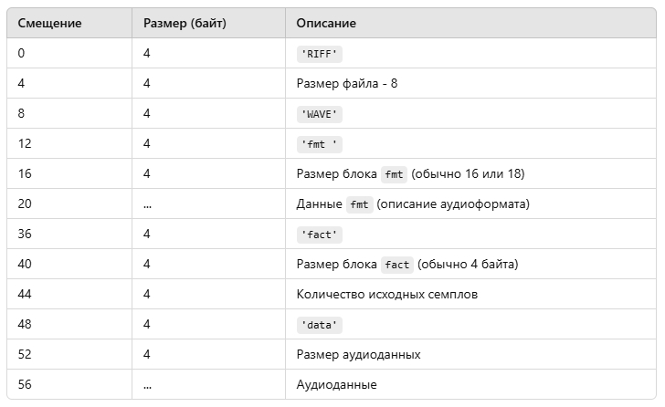

Загрузить пример ЗДЕСЬ. Для компиляции вам потребуется Visual Studio C++ и DirectX SDK June 2010, проект для VS2005, но вы можете попробовать скомпилировать данный проект на VS2019 и Win10 SDK где есть DirectSound.
У WAV файла есть заголовок с инофрмацией о звуковых данных, которые храняться в файле. Сначала надо прочитать заголовок, потом сами данные. В заголовке WAV-файла типично содержится следующие данные (первые 44 байта для стандартного PCM-аудио), в этом заголовке data размещено по смещению 36 байт:
Если по смещению 36 байт в заголовке размещено fact - то содержимое после 36 байта другое чем в таблице.
Начиная с offset 36 в этих 4 байтах может храниться либо MAKEFOURCC('d','a','t','a') либо MAKEFOURCC('f','a','c','t'). В примере кода есть условие if с переходом на нужный блок.
Блок fmt идет начиная с 20 байта.
Подробная структура до блока fmt:
Блок fmt:
С offset 20 начинается блок данных fmt, который содержит параметры аудио.
Где начинается блок data?
После блока fmt, начиная с offset 36 (или позже, если fmt больше 16 байт), начинается следующий блок, обычно data.
Если у вас расширенный заголовок WAV (например, для форматов с компрессией или дополнительными метаданными), размер блока fmt может быть больше 16 байт. Тогда блок data будет сдвинут дальше. Всегда читайте размер блока fmt (offset 16) и используйте его для определения начала следующего блока.
Назначение блока fmt:
Блок fmt описывает формат аудио, например:
Если вместо fmt стоит другой идентификатор, например LIST, это указывает на блок метаданных, а не формат аудио.
WAVEFORMATEX — это структура, используемая в Windows для описания формата звука в WAV-файлах или для взаимодействия с аудиодрайверами, например в DirectSound или WinMM. Эта структура предоставляет полную информацию о формате аудиоданных.
typedef struct {
WORD wFormatTag; // Формат аудио (например, PCM = 1)
WORD nChannels; // Количество каналов (1 = моно, 2 = стерео)
DWORD nSamplesPerSec; // Частота дискретизации (например, 44100 Гц)
DWORD nAvgBytesPerSec; // Средняя скорость передачи данных (байт/сек)
WORD nBlockAlign; // Выравнивание блока (байт на семпл для всех каналов)
WORD wBitsPerSample; // Количество бит на семпл (например, 8 или 16)
WORD cbSize; // Размер дополнительных данных (0 для PCM)
} WAVEFORMATEX;
Поля структуры:
nAvgBytesPerSec = nSamplesPerSec × nChannels × (wBitsPerSample / 8)
Пример: для стерео, 16 бит, 44100 Гц
nAvgBytesPerSec = 44100 × 2 × (16 / 8) = 176400 байт/сек.
nBlockAlign = nChannels × (wBitsPerSample / 8)
Пример: для стерео, 16 бит:
nBlockAlign = 2 × (16 / 8) = 4 байта.
Все аудиоданные должны быть кратны этому значению.
8 для 8-битного аудио (неподписанный целый). 16 для 16-битного аудио (подписанный целый).
Пример заполнения структуры:
Для стандартного WAV-файла (моно, 16 бит, 44100 Гц):
WAVEFORMATEX waveFormat; waveFormat.wFormatTag = WAVE_FORMAT_PCM; // Формат PCM waveFormat.nChannels = 1; // Моно waveFormat.nSamplesPerSec = 44100; // Частота дискретизации 44.1 кГц waveFormat.nAvgBytesPerSec = 44100 * 1 * 2; // Байтовая скорость = 88200 байт/сек waveFormat.nBlockAlign = 1 * (16 / 8); // Выравнивание блока = 2 байта waveFormat.wBitsPerSample = 16; // 16 бит на семпл waveFormat.cbSize = 0; // Нет дополнительных данных
Применение:
Пример использования с DirectSound:
LPDIRECTSOUNDBUFFER pBuffer;
DSBUFFERDESC desc = {0};
WAVEFORMATEX waveFormat = {0};
waveFormat.wFormatTag = WAVE_FORMAT_PCM;
waveFormat.nChannels = 2; // Стерео
waveFormat.nSamplesPerSec = 44100; // 44.1 кГц
waveFormat.nAvgBytesPerSec = 44100 * 2 * 2; // 176400 байт/сек
waveFormat.nBlockAlign = 2 * 2; // 4 байта на блок
waveFormat.wBitsPerSample = 16; // 16 бит
waveFormat.cbSize = 0;
desc.dwSize = sizeof(DSBUFFERDESC);
desc.dwFlags = DSBCAPS_CTRLVOLUME;
desc.dwBufferBytes = 176400; // 1 секунда звука
desc.lpwfxFormat = &waveFormat;
HRESULT hr = g_DirectSound->CreateSoundBuffer(&desc, &pBuffer, NULL);
if (FAILED(hr)) {
std::cerr << "Ошибка создания звукового буфера!" << std::endl;
}
Для нестандартных форматов (например, сжатого звука) используется расширенная версия WAVEFORMATEX, которая включает дополнительные данные в поле cbSize. Если работаете с нестандартными форматами, лучше использовать WAVEFORMATEXTENSIBLE.
Теперь по поводу смещения 36 байт от начала файла. Если на 36 байте вместо data в заголовке WAV-файла стоит fact, это означает, что перед блоком аудиоданных присутствует информационный блок fact. Этот блок обычно используется в сжатых WAV-файлах (например, формата ADPCM) для хранения дополнительной информации о данных.
Что такое блок fact?
fact (FourCC): Указывает на блок метаданных. В формате PCM (не сжатый звук) этот блок обычно отсутствует, но в сжатых форматах (например, ADPCM) блок fact присутствует и содержит полезную информацию, такую как количество оригинальных семплов перед сжатием.
Структура блока fact:
Если на offset 36 вместо data находится fact, структура будет выглядеть так:
Для сжатого WAV-файла, содержащего блок fact, можно встретить следующее:
'f' 'a' 'c' 't' (ASCII 'fact', hex: 0x66616374)
Размер блока (например, 4 для обычного fact)
Количество семплов до сжатия (например, 44100, если файл содержит 1 секунду звука с частотой 44100 Гц).
Offset 48 (или больше, в зависимости от размера fact):
'd' 'a' 't' 'a' (ASCII 'data') Размер аудиоданных. Аудиоданные.
Что делать, если встречается fact?
Если файл содержит блок fact, его нужно пропустить перед обработкой аудиоданных. Это делается так:
Блок fact обязателен для сжатых форматов WAV (например, ADPCM) и не встречается в файлах PCM.
Размер данных внутри блока fact всегда кратен 4 байтам.
Пропускать ненужные блоки (например, fact, LIST и другие) — стандартная практика при работе с WAV.
PCM (Pulse Code Modulation) — это метод цифрового представления звука. Он заключается в том, что аналоговый звуковой сигнал периодически измеряется (дискретизация) и преобразуется в цифровые значения с определенной точностью (квантизация). Это один из наиболее распространённых форматов звуковых данных, особенно для несжатых аудиофайлов, таких как WAV.
Особенности PCM:
Помимо PCM, существуют форматы, которые используют сжатие (с потерями или без) FLAC, MP3, ADPCM.
Если ваш WAV-файл содержит блок fact по смещению 36 от начала файла, это указывает на то, что файл использует сжатый формат данных, а не чистый PCM. В формате PCM блок fact обычно отсутствует, так как PCM не нуждается в дополнительной информации для декодирования.
Почему в WAV появляется блок fact?
Пример структуры WAV-файла, если он содержит fact:
Как определить, что WAV-файл не PCM?
Если WAV-файл содержит блок fact, это указывает на то, что он использует сжатый формат, например ADPCM. Проверьте значение wFormatTag в заголовке fmt, чтобы точно определить тип формата. Если файл сжат, аудиоданные нужно декодировать перед воспроизведением.
Что делать с файлом, содержащим блок fact?
DirectSound 8 может автоматически декодировать аудиоданные, если вы загружаете их в буфер, поддерживающий воспроизведение сжатых форматов, таких как ADPCM. Однако для этого нужно правильно настроить и создать буфер, указав, что данные сжаты..
Некоторые старые или специфичные аудиоформаты, которые начинают с PCM, но могут поддерживать дополнительные метаданные, могут добавлять блок fact, даже если формат звука остаётся PCM. Это иногда делается для совместимости с более поздними форматами, такими как сжатые форматы или вариации форматов. Это значит что в заголовке wFormatTag может быть равен 1 что значит PCM но такой файл может содержать блок fact что значит что файл сжатый (даже если он не сжатый).
Роль Primary Buffer в DirectSound:
Primary buffer — это основной буфер, который управляет выводом звука на устройство воспроизведения. Он управляет настройками устройства, такими как уровень совместимости, частота дискретизации и другие параметры. На самом деле, вы не загружаете аудио-данные в primary buffer, так как этот буфер используется только для управления устройством вывода.
Secondary buffers — это те буферы, в которые загружаются данные звуковых файлов (например, WAV) и которые затем воспроизводятся. Secondary buffer получает данные для воспроизведения и непосредственно используется для вывода звука.
Почему мы создаем primary buffer:
Обязательность: При работе с DirectSound, для корректной работы системы необходимо создать primary buffer (даже если мы не будем в нем хранить данные для воспроизведения). Это нужно для того, чтобы установить уровень совместимости (кооперативный уровень) с устройством воспроизведения. Без этого шага DirectSound не сможет корректно работать с устройством вывода.
Настройка уровня совместимости: Важнейшая роль primary buffer — это установка кооперативного уровня с помощью SetCooperativeLevel. Это нужно для того, чтобы программа могла контролировать приоритет вывода звука на устройство. Например, если у вас несколько приложений пытаются использовать звук одновременно, этот буфер задает, как ваше приложение будет взаимодействовать с системой (например, приоритетное или фоновое воспроизведение).
Primary buffer необходим для инициализации DirectSound, но его непосредственное использование для воспроизведения звука не требуется. Поэтому если в вашем случае нет необходимости в его использовании, его можно безопасно удалить из кода.
В DirectSound можно создать primary buffer (первичный буфер) с одними параметрами, а воспроизводимые звуки (secondary buffers) могут использовать другие параметры.
Primary buffer управляет тем, как DirectSound микширует и выводит звук на аудиоустройство. Его формат (частота дискретизации, глубина, число каналов) задает, в каком формате аудиоустройство будет воспроизводить микшированный звук. Все вторичные буферы (secondary buffers), которые вы создаете и проигрываете, будут автоматически преобразованы (пересэмплированы), если их формат отличается от формата primary buffer.
Вы можете задавать индивидуальные параметры для каждого вторичного буфера. Например, один буфер может быть стерео с 44.1 кГц, а другой — моно с 22.05 кГц. DirectSound автоматически преобразует их в формат primary buffer, если это необходимо.
Если форматы secondary buffers отличаются от primary buffer, DirectSound выполнит автоматическое преобразование (resampling). Это может немного увеличить нагрузку на процессор и в некоторых случаях ухудшить качество звука (в зависимости от алгоритма преобразования). Чтобы избежать преобразований, рекомендуется использовать один и тот же формат для primary buffer и secondary buffers.
Если все звуки в вашей игре или приложении имеют одинаковый формат, настройте primary buffer и secondary buffers с этим форматом, чтобы избежать лишних преобразований. Если нужно воспроизводить звуки с разными форматами, будьте готовы к возможным задержкам или снижению качества из-за пересэмплирования.
Можно задавать разные параметры для primary buffer и secondary buffers, и DirectSound автоматически выполнит преобразование. Однако для лучшей производительности и качества звука желательно, чтобы их форматы совпадали.
Дублирование буфера с помощью IDirectSound8::DuplicateSoundBuffer() имеет несколько важных применений.
Что такое дублирование буфера?
Метод DuplicateSoundBuffer создает новую копию существующего буфера, которая: Делит один и тот же аудиоданные (не создает копию содержимого, а ссылается на оригинальный аудиобуфер). Получает собственный независимый объект буфера, который можно управлять отдельно от исходного.
Зачем дублировать буфер?
Если вы хотите воспроизвести один и тот же звук (например, звук шагов, выстрелов, или любого другого короткого эффекта) несколько раз одновременно, дублирование необходимо. Почему? В DirectSound один буфер не может быть одновременно воспроизведен несколько раз. Если вы вызовете Play для одного буфера до завершения его воспроизведения, вызов перезапустит воспроизведение с начала. Чтобы этого избежать, создается копия буфера. Каждая копия может быть запущена независимо. Пример: Звук шагов. Левый и правый шаги воспроизводятся с небольшой задержкой, но если звук запускается из одного буфера, второй звук перезапустит первый.
Дублирование буфера не создает копию звуковых данных. Вместо этого оно создает ссылку на уже загруженные данные, что экономит память. Это особенно полезно для коротких звуковых эффектов, которые часто воспроизводятся.
Дублированные буферы имеют свои собственные настройки: Громкость (SetVolume) Частота (SetFrequency) Панорама (SetPan) Каждую копию можно воспроизводить, останавливать или управлять ею независимо от оригинала или других копий.
Если вы часто воспроизводите один и тот же звук одновременно, используйте DuplicateSoundBuffer для создания независимых копий. Убедитесь, что вы освобождаете каждый дублированный буфер после завершения его использования, чтобы избежать утечек памяти.
Почему дублировать буфер обязательно? В DirectSound каждый IDirectSoundBuffer объект поддерживает только одно воспроизведение одновременно. Дублирование позволяет запускать звук в нескольких местах одновременно, что делает это ключевой частью разработки игр и мультимедийных приложений.
Что такое Панорама (Pan) - Панорама (Pan) в контексте аудио — это параметр, который определяет, как звук распределяется между левым и правым каналами в стереосистеме. Этот параметр позволяет "разместить" звук в стереополе, создавая эффект, что звук исходит из определенного направления.
Как работает панорама
Центр (0): Если панорама установлена в центр, громкость звука равномерно распределяется между левым и правым каналами. Звук воспринимается как идущий прямо перед слушателем. Смещение влево (отрицательные значения): Чем больше значение панорамы сдвигается влево, тем громче звук становится в левом канале и тише в правом. Смещение вправо (положительные значения): Аналогично, при сдвиге вправо звук становится громче в правом канале и тише в левом.
В DirectSound параметр панорамы задается через метод SetPan() объекта звукового буфера (IDirectSoundBuffer). Диапазон значений: DSBPAN_LEFT (-10,000): Полностью в левом канале. DSBPAN_RIGHT (+10,000): Полностью в правом канале. 0: Центр, равномерное распределение между каналами.
Pitch (высота звука) — это параметр, определяющий частоту воспроизведения аудиоданных. Он отвечает за восприятие звука как более высокого или более низкого. Изменение высоты звука связано с изменением скорости воспроизведения аудиодорожки.
Как работает Pitch?
Увеличение высоты звука: Увеличение частоты воспроизведения (pitch) ускоряет аудио. Это делает звук выше, но может уменьшить его длительность. Например, частота воспроизведения увеличивается с 44100 Гц до 88200 Гц, и звук кажется "высоким". Уменьшение высоты звука: Уменьшение частоты воспроизведения замедляет аудио. Это делает звук ниже и увеличивает его длительность. Например, частота воспроизведения уменьшается с 44100 Гц до 22050 Гц, и звук кажется "низким".
В DirectSound параметр высоты звука контролируется с помощью метода SetFrequency у объекта буфера (IDirectSoundBuffer). Оригинальная частота: Исходная частота звука задается в структуре WAVEFORMATEX при создании буфера (поле nSamplesPerSec). Например, 44100 Гц — стандартная частота для CD-качества звука. Диапазон частот: Для большинства звуковых карт диапазон частот составляет от DSBFREQUENCY_MIN (200 Гц) до DSBFREQUENCY_MAX (100,000 Гц). Стандартная частота звука, с которой он был записан, равна DSBFREQUENCY_ORIGINAL.